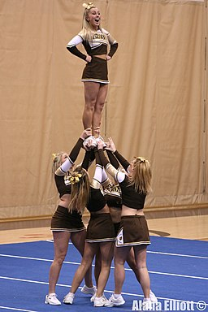

Stunting Basics
There are mainly 4 people in a stunt group. The first is the flyer, the one in the air. Their job is to keep their legs straight, chest up, and to not pull their heels backwards or their toes forward. Next, there is the backspotter. The backspotters job is to push the flyer into the air and grab their ankles to hold them up. Finally, there is the main and side bases. Their job is to grab hold of the bottom of the flyers feet and use their legs to help drive the flyer up. The bases should be looking at eachother to make sure they’re going up at the same time. Overall, stunting is not just about one person everyone must work together to have a cohecent stunt.
